Your First Digital Object
You followed every Deployment step and you have now a local Archipelago instance. Great!
So what now? It is time to give your new repository a try and we feel the best way is to start by ingesting a simple Digital Object.
Note: This guide will assume Archipelago is running on http://localhost:8001, so if you wizardly deployed everything in a different location, please replace all URIs with your own setup while following this guide.
Requirements
- Running Archipelago (http://localhost:8001)
- 20 minutes of your time.
- Open Mind.
Welcome!
Start by opening http://locahost:8001 in your favourite Web Browser.
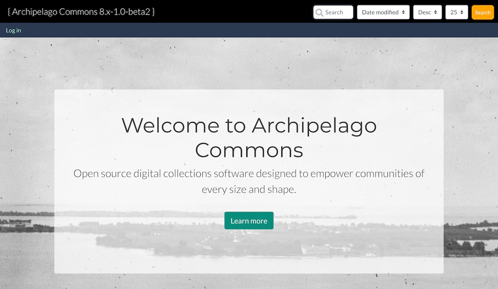
Your Demo deployment will have a fancy Home page with some banners and a small explanation of what Archipelago is and can do. Feel free to read through that now or later.
Click on Log in in the top left corner and use your demo credentials from the deployment guide.
- user: demo
- pass: demo
(or whatever password you decided was easy for you to remember during the deployment phase)
Press the Log in button.
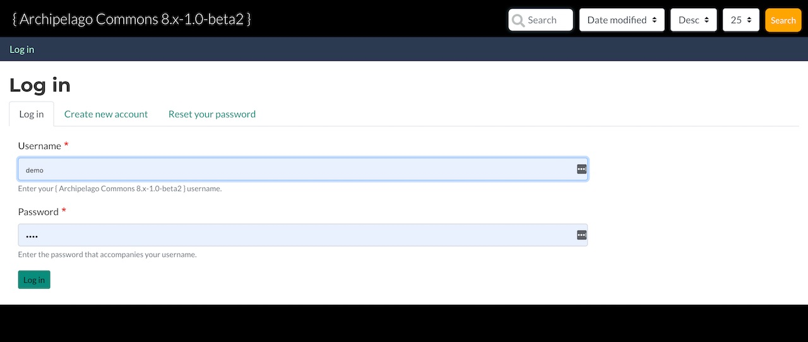
Great, welcome demo user! This users has limited credentials and uses the same global theme as any anonymous user would. Still, demo can create content, so let's use those super powers and give that a try.
You will see a new Menu item on the top, black, navigation bar named Add Content. Click it!
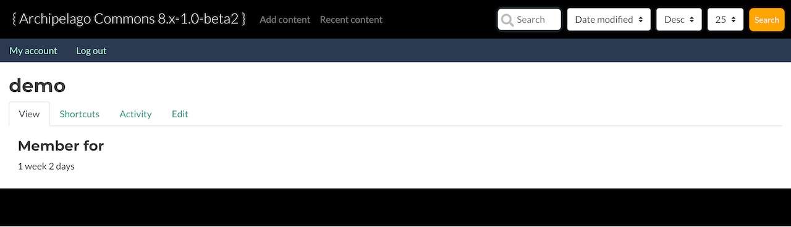
Brief Background
As you already know Archipelago is build on Drupal 8/9, a very extensible CMS. In practice that means you have (at least) the same functionality any Drupal deployment has and that is also true for Content Managment.
Drupal ships by default with a very flexible Content Entity Type named Node. Nodes are used for creating Articles and simple Pages but also in Archipelago as Digital Objects.
Drupal has a pretty tight integration with Nodes and that means you get a lot of fun and useful functionality by default by using them.
Want to know more about Entities?
An Article and a Digital Object are both of type Nodes, but each one represents a different Content Type. Content Types are also named Bundles.
An individual Content, like "Black and White photograph of a kind Dog" is named a Content Entity or more specific in this case a Node.
What have Article and Digital Object Content types in common and what puts the apart?
- Each Content Type or Bundle has a set of
Base Fieldsand also user configurable set ofFieldsattached (or bundled together).- E.g
Articlehas a title, a Body and the option to add an image. Digital Objecthas a title but also a special, very flexible one namedStrawberry Field(more about that later).
- E.g
-
Fields are where you put your data into and also where your data comes from when you expose it to the world.
Nodes, as any other Content entity have Base Fields (which means you can't remove or configure them) that are used all over the place. Good examples are thetitleand also the owner, nameduid(you!).- Other Fields, specific to a Content Type, can be added and configured per Bundle.
- A
Field Widgetis used to input data into a Field. - Each field can have a
Field Formatterthat allows you to setup how it is displayed to the World. - A set of
Field Formatters(the way you want to show your content formatted to the world) is named aDisplay Mode. You can have many, create new ones and remove them, but only use one at the time. - A set of
Field Widgets(the way you want to Create and Edit aNode) is named aForm Mode. You can also have many, create new ones but only use one at the time.
-
Each Content Type can have different Permissions (using the build in
User Rolessystem). - Each Content Type can have one or more
Display Modes. In Practice this meansDisplay Modesare attached toContent Types.- Each display modes can have its own Permissions
- Each Content Type can have one or more
Form Modes. In Practice this meansForm Modesare attached toContent Types.- Each
Form Modecan have its own Permissions.
- Each
There is of course a lot more to Nodes, Content Types, Formatters, Widgets and in general Content Entities but this is a good start to understand what will happen next.
Adding Content
Below you see all the Content Types defined by default in Archipelago. Let's click on Digital Object to get your first Digital Object Node.
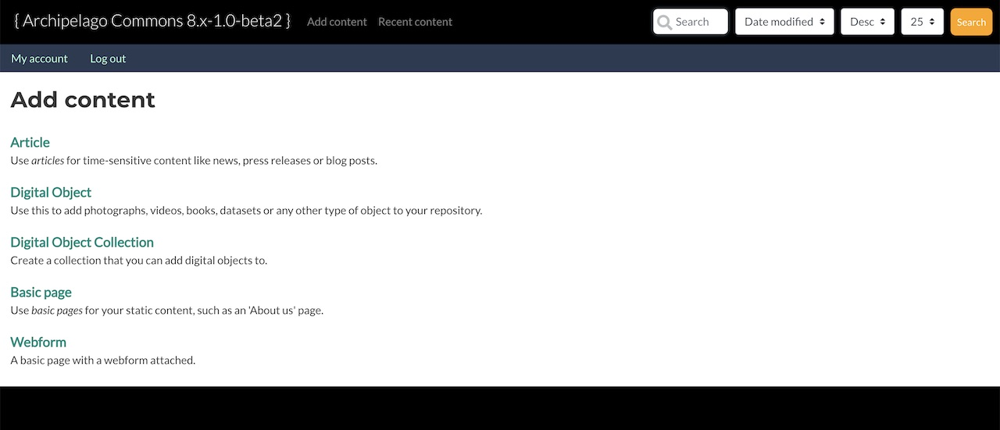
My Metadata
What you see below is a Form Mode in action. A multi-step Webform that will ingest metadata into a field of type Strawberry Field (where all the magic happens) attached to that field using a Webform Field Widget, an editorial/advanced Block on the right side and a Workflow/state drop down (Save as) at the bottom.
Let's fill out the form to begin our ingest. We recommend to use similar values as the ones shown in the screen capture to make following the tutorial easier.
Make sure you select Photograph as Media Type and all the fields with a red * are filled up. Then press Move on to next step at the bottom of the webform to load the next step inline.
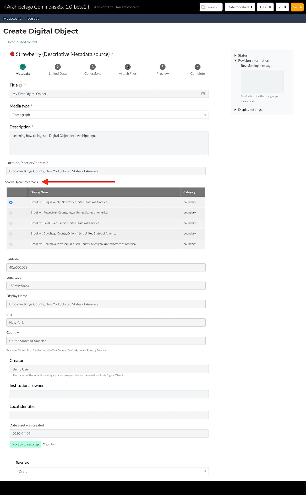
Tip: When entering a location, place or address you will need to click on the Search OpenStreet Maps button, which is what that big red arrow is pointing to in the screenshot above.
Note: For now, let's leave the state of this Digital Object as Draft.
Why does this look different than Repository X?
We assume you come from a world where repositories define different Content types and the shape, the fields and values (Schema) are fixed and set by someone else or at least quite complicated to configure. This is where Archipelago differs and starts to propose its own style. You noticed that there is a single Content Type named Digital Object and you have here a single Web Form. So how does this allow you to have images, sequences, videos, audio, 3D images, etc?
There are many ways of answering that, Archipelago works under the idea of an (or many) Open Schema(s), and that notion permeates the whole environment. Practical answer and simplest way to explain based on this demo is:
- The
Digital Objectis a generic container for any shape of metadata. Metadata is generated either via this Webform-based widget you're currently using, manually (power-user need only) or via APIs. Because of this, Metadata can take any shape to express your needs of Digital Objects and therefore we do not recommend making multiple Digital Object types. However, if you ever do need more Digital Object types, the option is available. - The Strawberry field Field Widget allows you to attach any
Webform, built using theWebform Moduleand Webforms can be setup in almost infinite ways. Any field, combo, or style can be used. Multi Step, single step - we made sure they always only touch/modify data they know how to touch, so even a single input element webform would ensure any previous metadata to persist even if not readable by itself (See the potential?). And Each Webform can be also quite smart! - The Strawberry field Field Widget will take all your Webform input, process any uploaded files, generate a JSON representation, enrich and complement it with Archipelago specific data and save it for you inside the
Strawberry field.
We will come back to this later.
Linked Data
As the name of this step suggests; you will be adding all your Linked Data elements here. This step showcases some of the autocomplete Linked Data Webform elements we built for Archipelago. We truly believe in Wikidata as an open, honest, source of Linked Open Data and also one where you can contribute back. But we also have LoC autocompletes and Getty.
Again, enter all fields with a red * and when you are finished, click Move on to next step
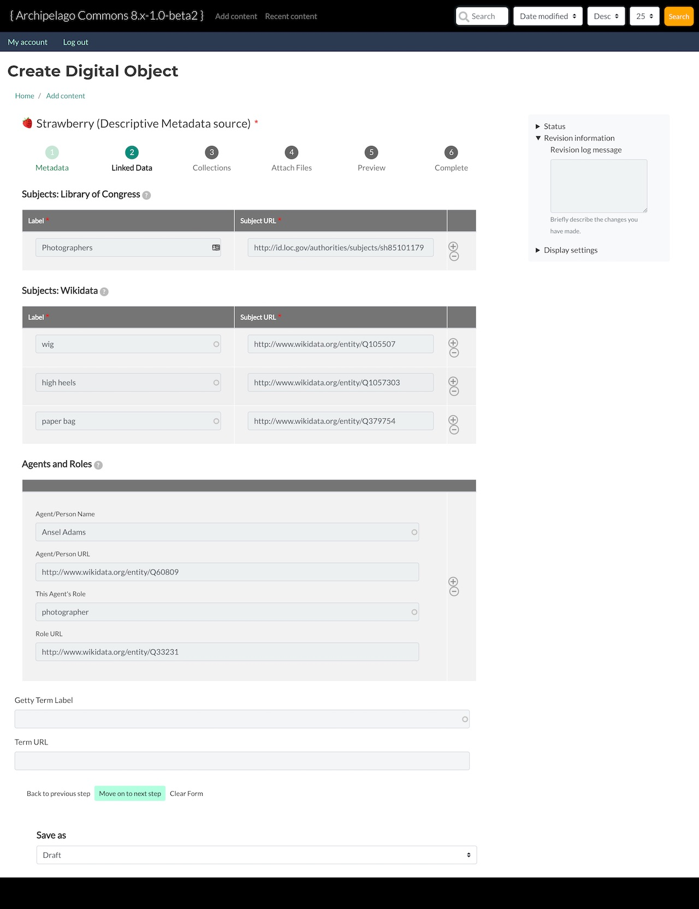
Collections
Since this is our first digital object we do not yet have a Digital Object Collection for which My First Digital Object could be a member of. In other words, you can leave Collection Membership blank and click Next: Upload Files.
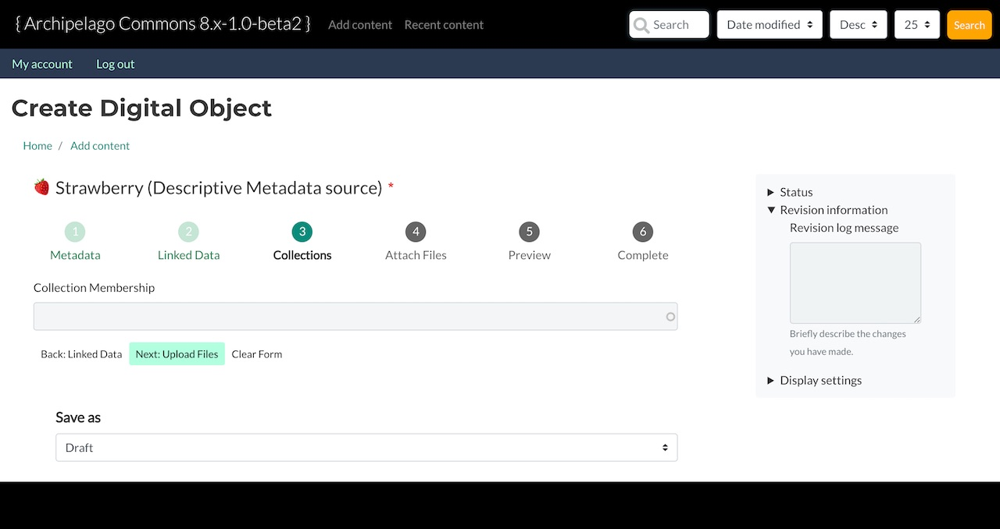
Upload Files
Now we will upload our Photograph. Click Choose Files to open your file selector window and choose which file you would like to ingest.
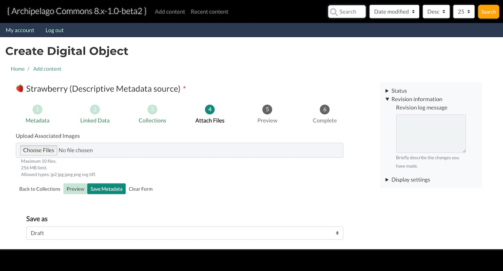
Once you've uploaded your file, you will see all the Exif data extracted from the image, like so...
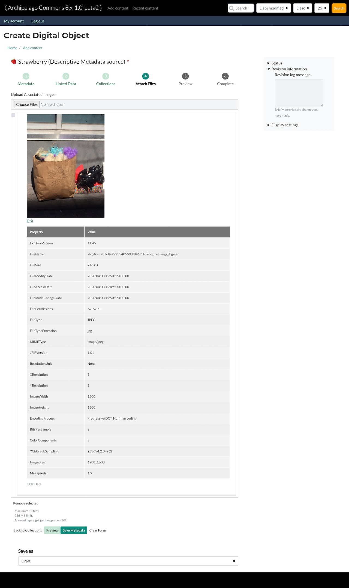
Once you've mentally digested all of that data, let's go ahead and click Save Metadata.
Question: "Wait! Don't I need to switch Save as from Draft to Publish? I'm ready for this Digital Object to be shared with the world!"
Answer: By clicking Save Metadata we are simply persisting all the metadata in the current webform session. The actual ingest of the Object happens when you click Save on the next and final step, Complete.
Complete
Alright, we've made it. We've added metadata, linked Data, uploaded our files and now... we're ready to save! Go ahead and change the status from Draft to Published and click Save.
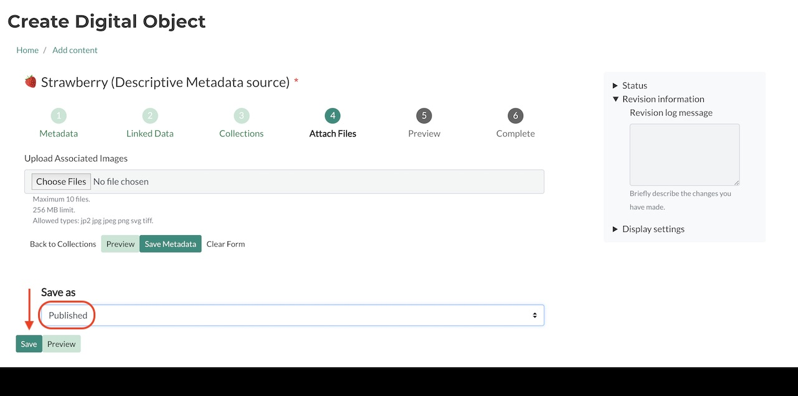
Once you hit save you should see the following green messages and your first Archipelago Digital Object!
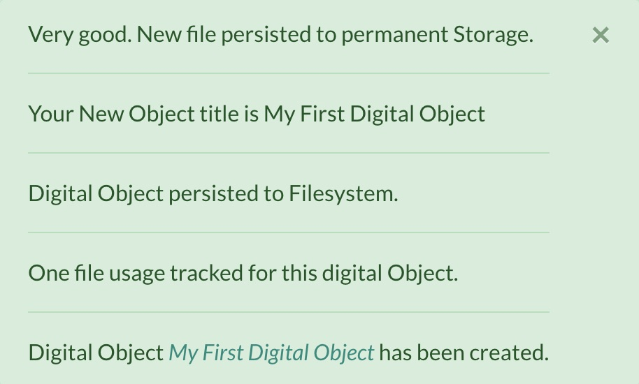
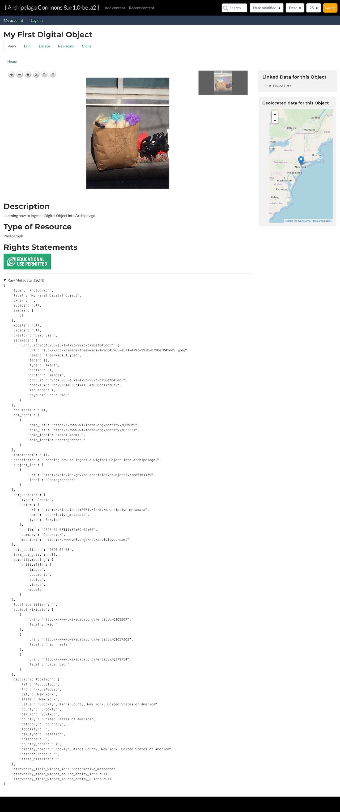
Congratulations on creating your first digital object! üçì
Thank you for reading! Please contact us on our Archipelago Commons Google Group with any questions or feedback.
Return to the Archipelago Documentation main page.